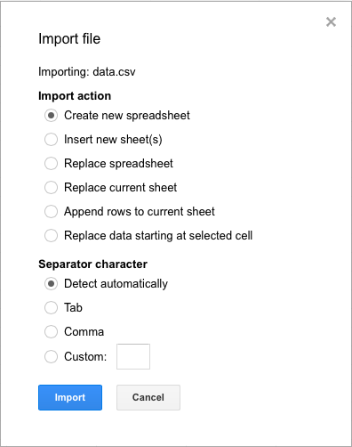
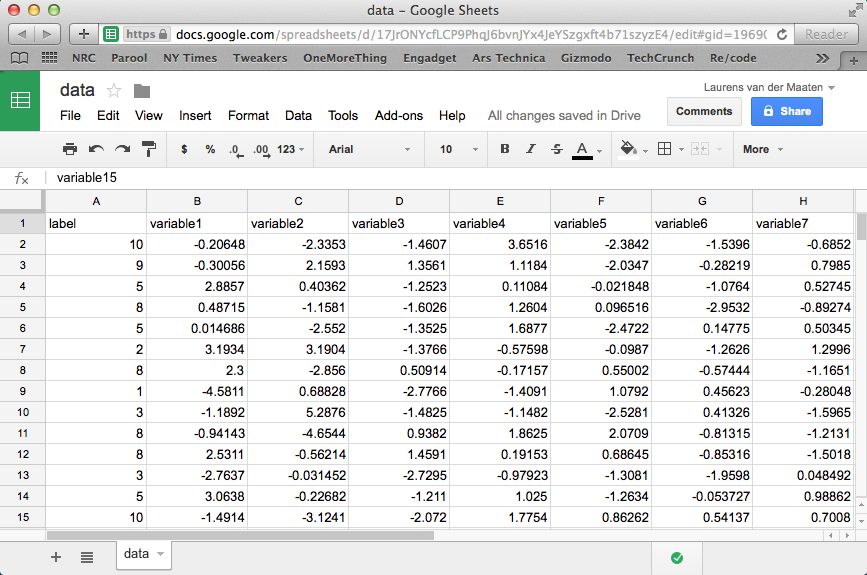
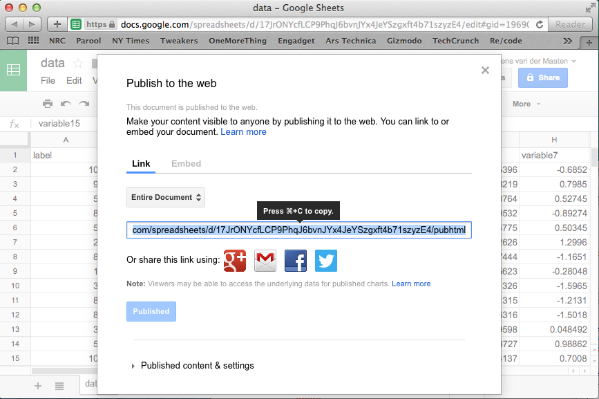
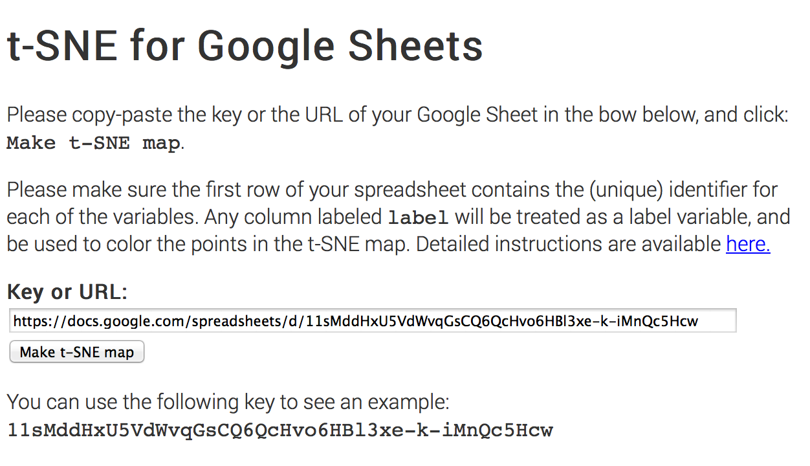
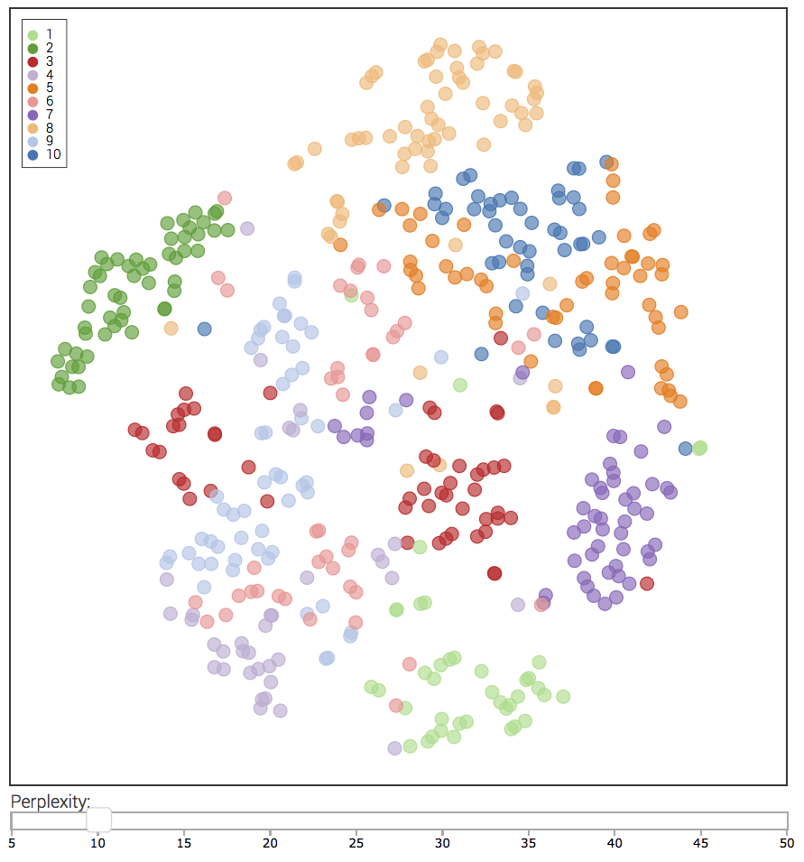

t-SNE for Google Sheets
So you have some data in a spreadsheet on which you want to apply t-SNE? It only takes a few minutes to get your t-SNE map if you follow this simply four-step guide:
- Import your data in a Google Sheet. (Of course, you can skip this step if your data is already in a Google Sheet.) In Google Sheets, click File -> Import... -> Upload, and select the spreadsheet you want to upload.

After the upload is complete, click Import and Open now . The import function can deal with comma-separated files (.csv) and Excel files (.xls, .xlsx). You should now see something like this:

- Make sure your spreadsheet has the right format. The t-SNE app expects to see only a single sheet, so make sure to remove all other sheets. Measurements (points in the t-SNE map) should be in rows, whereas variables should be in columns. The app expects to see one header row that contains the (unique!) names of the variables. If you label a column with the name label, this column will not be used in the construction of the t-SNE map but it will be used to color the points in the map. See the image above for an example of a valid sheet format.
- Make the spreadsheet available to external apps. In Google Sheets, select File -> Publish to the web… -> Publish. In the window that appears, you will see a link that you can use to access your spreadsheet. Copy this link to your clipboard (Ctrl+C on Windows, ⌘+C on Mac).

- Make your t-SNE map! Paste the copied link into the link box in the t-SNE app (Ctrl+V on Windows, ⌘+V on Mac), and click the Make t-SNE map button.

You will now be taken to a new page, in which (after a few seconds) a first version your map will appear. This map will be continuously updated. Depending on the size of your data, it may take several minutes before your final t-SNE map is ready!

You can use the slider to adjust the perplexity parameter of t-SNE. Lower perplexity values generally lead to more fine-grained clusters. Have fun!
This app uses tsnejs, tabletop, canvg, html2canvas, d3, d3.legend, and d3.slider. By Laurens van der Maaten.